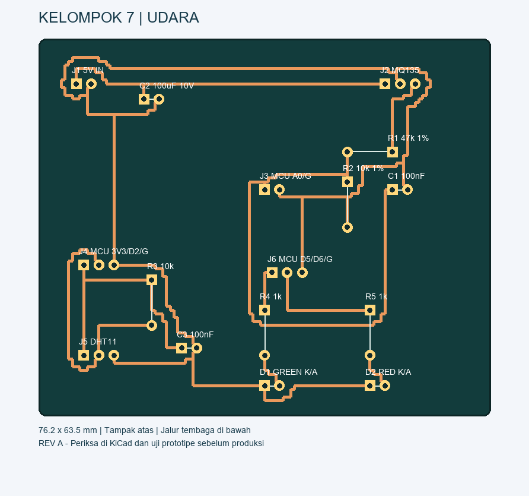
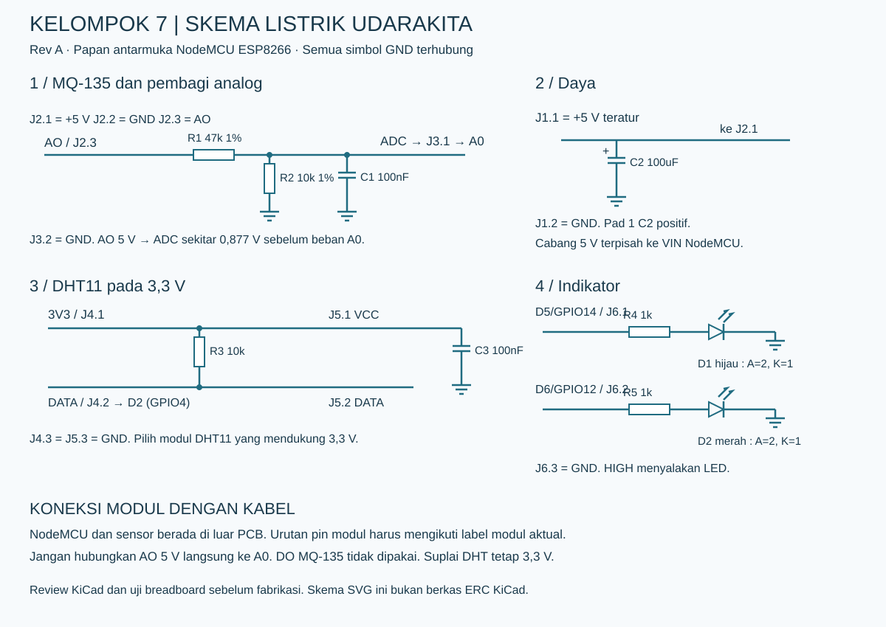

Judul: UdaraKita — Pemantauan Indikasi Gas, Suhu, dan Kelembapan Berbasis Wi-Fi
Anggota: Zainal Fattah, Naufal Adani, Aisyha N A.
Batas anggaran: Rp150.000. Tanggal perencanaan: 12 Oktober 2026.
Membuat prototipe pembelajaran yang menampilkan perubahan pembacaan sensor gas MQ-135, suhu, dan kelembapan di browser HP. NodeMCU ESP8266 membaca sensor, mengendalikan dua LED, dan menyediakan halaman web lokal. HP dan NodeMCU terhubung ke Wi-Fi yang sama; alternatif demonstrasi memakai mode access point NodeMCU. Tidak perlu LCD, langganan cloud, atau akses internet untuk demonstrasi lokal.
Alur: udara sekitar → MQ-135 dan DHT11 → NodeMCU → Wi-Fi → browser HP. LED hijau menunjukkan pembacaan dekat baseline; LED merah menunjukkan kenaikan relatif yang melewati ambang percobaan.
MQ-135 merespons beberapa jenis gas dan dipengaruhi kondisi lingkungan. Proyek ini tidak menghasilkan AQI/ISPU, PM2.5, atau kadar CO₂ ppm yang tervalidasi. Gunakan istilah “nilai sensor”, “rasio terhadap baseline”, dan “kenaikan respons gas”. LED hijau bukan jaminan udara aman. Ini prototipe pembelajaran, bukan alarm keselamatan.
Harga berikut adalah alokasi belanja, bukan penawaran toko yang dijamin. Pembanding daring dicantumkan di bagian sumber. Pilih komponen dengan harga maksimal sesuai tabel; gabungkan pembelian untuk menghemat ongkir.
| Komponen | Jumlah | Anggaran | Kegunaan |
| NodeMCU ESP8266 V3 CH340 | 1 | Rp35.000 | Mikrokontroler dan Wi-Fi |
| Modul MQ-135, pin AO tersedia | 1 | Rp20.000 | Indikasi perubahan gas/asap |
| Modul DHT11 yang mendukung suplai 3,3 V | 1 | Rp18.000 | Suhu dan kelembapan |
| LED hijau dan merah 3 mm | 2 | Rp2.000 | Indikator perubahan |
| Resistor: 47 kΩ 1%, 10 kΩ 1%, 10 kΩ, 1 kΩ ×2 | 5 | Rp2.000 | Pembagi tegangan, pull-up, pembatas LED |
| Kapasitor: 100 nF ×2 dan elko 100 µF ≥10 V | 3 | Rp4.000 | Filter dan stabilisasi suplai |
| Header pitch 2,54 mm dan konektor/sambungan daya | 1 set | Rp5.000 | Sambungan PCB dan percabangan daya |
| Kabel Dupont female–female | 1 set kecil | Rp8.000 | Menghubungkan modul dan PCB |
| PCB satu sisi ±8 ×7 cm, bahan/etsa lokal | 1 | Rp20.000 | Papan rangkaian |
| Kabel USB daya/data sesuai NodeMCU | 1 | Rp8.000 | Pemrograman dan kebutuhan suplai |
| Alas/casing sederhana berventilasi + pengikat | 1 | Rp8.000 | Dudukan proyek |
| Cadangan ongkir/selisih harga | — | Rp20.000 | Cadangan |
| Total maksimum | Rp150.000 |
Total barang Rp130.000 + cadangan Rp20.000. Alokasi PCB mengasumsikan fasilitas etsa sekolah/kampus atau jasa lokal murah; belum merupakan harga produksi pabrik termasuk ongkir/MOQ. Jika jasa PCB lebih mahal, gunakan PCB lubang sebagai prototipe dengan skema yang sama, dan serahkan file desain PCB sebagai keluaran tugas.
Diasumsikan tersedia/dipinjam: adaptor USB 5 V minimal 1 A yang baik, laptop, HP, solder, timah, multimeter, dan alat/fasilitas pembuatan PCB. Jika semuanya harus dibeli baru, Rp150.000 belum mencukupi. Casing dapat memakai barang bekas. Jangan mengurangi pembagi tegangan R1/R2 demi menekan biaya.
File utama: Kelompok7_Udara.kicad_pcb — dibuka dengan PCB Editor KiCad. Ukuran 76,20 × 63,50 mm, komponen through-hole, pitch header 2,54 mm, jalur di B.Cu saja, tanpa via, lebar jalur 0,50 mm, pad 1,70 mm, lubang 0,90 mm. Papan dapat memakai material satu sisi; pad komponen tetap didefinisikan sebagai through-hole di file CAD.
PCB ini adalah papan antarmuka, bukan soket untuk menancapkan seluruh NodeMCU. NodeMCU, MQ-135, dan DHT11 dipasang terpisah pada dudukan lalu dihubungkan menggunakan kabel. Ini menghindari masalah perbedaan lebar board NodeMCU dan urutan pin modul dari toko berbeda. Ikuti tulisan pin pada modul, bukan posisi fisiknya.
Gambar Preview_PCB.png dan Layout_PCB.svg adalah tampak atas sisi komponen, dengan jalur bawah diperlihatkan. Keduanya bukan berkas Gerber atau pola transfer toner. Gunakan KiCad untuk mengatur orientasi/mirror yang sesuai proses fabrikasi.

Nomor 1 ditandai pad persegi. Penomoran berikut merujuk ke konektor PCB, bukan nomor pin fisik ESP8266.
| Konektor PCB | Pin | Sambungkan ke |
| J1 daya | 1 / 2 | +5 V teratur / GND dari adaptor |
| J2 MQ-135 | 1 / 2 / 3 | VCC 5 V / GND / AO modul MQ-135 |
| J3 analog ke MCU | 1 / 2 | A0 NodeMCU / GND NodeMCU |
| J4 digital ke MCU | 1 / 2 / 3 | 3V3 NodeMCU / D2 (GPIO4) / GND |
| J5 DHT11 | 1 / 2 / 3 | VCC 3,3 V / DATA / GND modul DHT11 |
| J6 indikator ke MCU | 1 / 2 / 3 | D5 (GPIO14) / D6 (GPIO12) / GND |
Pin DO modul MQ-135 tidak digunakan. Sensor MQ-135 harus mendapat 5 V, bukan 3,3 V. Pilih DHT11 yang dinyatakan mendukung 3,3 V dan uji dahulu. Jangan memberi modul DHT11 5 V pada rangkaian ini, karena pull-up pada modul dapat menarik jalur DATA ke 5 V.
Suplai normal: adaptor 5 V → dua cabang, satu ke J1 PCB, satu ke VIN/5V input NodeMCU yang telah diverifikasi untuk board tersebut; ground disatukan. J1 tidak otomatis memberi daya ke NodeMCU karena tidak ada jalur 5 V menuju J3/J4/J6. Gunakan konektor/percabangan daya berisolasi. Jangan mengandalkan VIN sebagai keluaran 5 V saat USB terpasang: perilaku klon berbeda-beda. Saat memprogram melalui USB laptop, lepaskan sumber 5 V eksternal; sambungkan kembali setelah USB laptop dilepas.
Analog: AO MQ-135 → R1 47 kΩ → net ADC → J3.1 → A0 NodeMCU. R2 10 kΩ dipasang antara ADC dan GND. C1 100 nF juga dipasang antara ADC dan GND. Pembagi tegangan ideal menghasilkan 5 × 10/(47+10) = 0,877 V ketika AO = 5 V. Dengan suplai 5,25 V dan resistor 1% pada kombinasi terburuk, hasil sekitar 0,936 V. Pembagi internal NodeMCU dapat menurunkan nilai lagi; ini sengaja konservatif untuk varian A0, dengan konsekuensi resolusi lebih rendah.
DHT: J4.1/J5.1 = 3V3; J4.2/J5.2 = DATA DHT. R3 10 kΩ menghubungkan DATA ke 3V3. Jika modul sudah memiliki pull-up, R3 boleh tidak dipasang setelah nilai pull-up modul diperiksa. C3 100 nF antara 3V3 dan GND.
LED hijau: GPIO14/D5 → R4 1 kΩ → anoda D1; katoda D1 → GND. LED merah: GPIO12/D6 → R5 1 kΩ → anoda D2; katoda D2 → GND. Pada footprint D1/D2: pad 1 = katoda/K, pad 2 = anoda/A. GPIO HIGH menyalakan LED.
Daya: C2 100 µF dipasang antara 5 V dan GND. Pad 1 C2 positif, pad 2 negatif. Estimasi kapasitas sumber 5 V/1 A memberi ruang bagi pemanas MQ-135 dan lonjakan arus Wi-Fi. MQ-135 menggunakan pemanas hingga sekitar 950 mW menurut manual; casing harus berventilasi.

Gunakan Arduino IDE, dukungan board ESP8266, ESP8266WiFi, ESP8266WebServer, dan pustaka DHT. Firmware belum termasuk dalam paket desain ini.
1. Baca DHT11 setiap 2 detik; tampilkan kegagalan baca sebagai “sensor belum terbaca”, bukan nol.
2. Ambil beberapa sampel ADC dan rata-ratakan agar tampilan lebih stabil.
3. Siapkan halaman web berisi suhu °C, kelembapan %RH, ADC mentah 0–1023, baseline, rasio pembacaan, dan status pemanasan.
4. Setelah sensor stabil, pengguna menekan “ambil baseline” untuk merata-ratakan kondisi referensi selama 60 detik. Tolak baseline nol atau pembacaan mendekati saturasi.
5. Contoh ambang khusus demonstrasi, bukan ambang kesehatan: LED merah jika rasio ADC/baseline >1,30 selama 10 detik; kembali hijau jika <1,15 selama 10 detik. Sesuaikan berdasarkan percobaan dan rekam alasannya. Selama pemanasan/error, jangan tampilkan status normal.
6. Halaman web meminta data baru setiap 2 detik. Semua fungsi inti tetap bekerja tanpa internet. Jangan mengonversi ADC langsung menjadi ppm atau AQI.
Manual MQ-135 menyebut conditioning awal lebih dari 48 jam. Jadwalkan sejak awal proyek; pemanasan singkat beberapa menit tidak menggantikan proses tersebut. Sesudah setiap penyalaan, tunggu hingga pembacaan stabil; kestabilan ditentukan dari data, bukan waktu yang dianggap berlaku untuk semua modul.
Usulan pembagian ini dapat disesuaikan dengan kemampuan anggota.
| Anggota | Tanggung jawab | Hasil |
| Zainal Fattah | Integrasi NodeMCU, firmware, Wi-Fi | Pembacaan sensor dan halaman web |
| Naufal Adani | Pengadaan, PCB, penyolderan, pengecekan daya | Rangkaian terpasang dan catatan pengukuran |
| Aisyha N A | Pencatatan pengujian, laporan, tampilan presentasi | Tabel pengamatan dan presentasi |
Hari 1: cek kebutuhan tugas, beli/pinjam alat, uji suplai dan sensor, mulai conditioning MQ-135. Hari 2–3: conditioning sesuai manual di tempat berventilasi, uji breadboard pin dan logika; kerjakan halaman web dan laporan. Hari 4: uji rangkaian lengkap sebelum PCB. Hari 5: review KiCad, buat PCB, solder. Hari 6: pengujian dan pencatatan. Hari 7: perbaikan, dokumentasi, latihan demonstrasi.
1. Pastikan ukuran kaki komponen cocok: resistor pitch 7,62 mm, kapasitor/LED/header pitch 2,54 mm. Pilih elko diameter ≤6,3 mm dan LED 3 mm. Letakkan sensor DHT11 sekitar ≥10 cm dari MQ-135 dan sumber panas; kabel dibuat pendek.
2. Buka file PCB di KiCad, cek penomoran pin, outline, clearance, dan footprint; jalankan DRC. File ini memakai footprint mandiri tanpa pustaka eksternal. Label detail kabel ada pada tabel di atas.
3. Sebelum menyalakan: cek kontinuitas setiap net, tidak ada hubung singkat 5 V–GND atau 3V3–GND, polaritas C2 dan LED benar. Ukur catu 5 V dan 3,3 V.
4. Uji pembagi analog sebelum memasang A0: dengan AO uji 5 V teratur, ukur titik ADC sekitar 0,88 V tanpa NodeMCU. Pastikan tetap <1 V. Hindari menghubungkan AO langsung ke A0.
5. Verifikasi pembacaan DHT11 dan respons MQ-135, akses web dari HP, serta pergantian LED dengan ambang uji sementara. Pengujian logika LED dapat menggunakan nilai simulasi tanpa membuat asap atau melepas gas.
6. Catat waktu, suhu, kelembapan, ADC, baseline, dan kondisi ruangan. Bandingkan perubahan ventilasi tanpa sengaja menghasilkan polutan; hasil bisa kecil karena sensor tidak selektif.
7. Coba restart dan Wi-Fi terputus; pastikan tidak menampilkan data lama sebagai data terbaru. Laporkan keterbatasan, bukan mengklaim alat telah mengukur udara aman.
Rute PCB telah diperiksa dengan skrip untuk konektivitas 10 net, pemisahan jalur dan pad, serta satu lapis tembaga. Lihat verification.txt untuk hasil numerik. Pemeriksaan ini bukan pengganti KiCad DRC/ERC. KiCad tidak tersedia pada lingkungan pembuatan; file belum dibuka oleh KiCad, belum melalui ERC skematik, dan belum diuji pada perangkat fisik. Skema disediakan dalam SVG dan uraian/netlist, bukan .kicad_sch. Karena itu desain berstatus Rev A untuk review dan prototipe, belum dinyatakan siap produksi massal. Gerber tidak disertakan.
Diakses untuk perencanaan 12 Oktober 2026; indeks harga dapat berasal dari beberapa bulan sebelumnya, jadi periksa harga checkout.
- NodeMCU V3: pembanding Rp26.800–Rp39.000 pada daftar Blibli: sumber ↗
- Modul MQ-135: contoh listing Rp14.800: sumber ↗
- DHT11: contoh Rp15.000–Rp17.500 pada daftar Blibli: sumber ↗
- Winsen MQ-135: tegangan pemanas, konsumsi, respons gas, conditioning awal: sumber ↗
- Espressif ESP8266EX: input ADC chip 0–1 V: sumber ↗
- Adafruit: panduan koneksi dan keterbatasan suplai sensor DHT: sumber ↗
Harga resistor, kapasitor, kabel, casing, dan proses PCB adalah estimasi perencanaan lokal, belum penawaran terverifikasi.